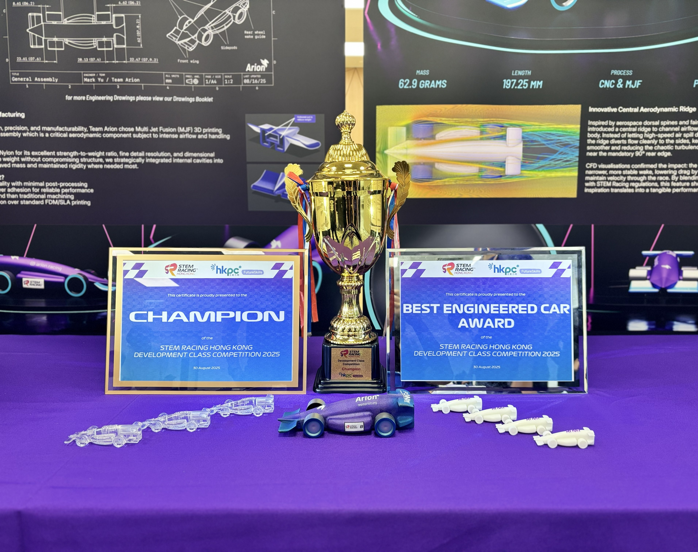

Team Arion Achievements
Development Class Champion
Team Arion claimed the title of Development Class Champion at the 2025 Hong Kong & Macau STEM Racing Dev Class Finals in August, showcasing superior design, teamwork, and performance.
Best Engineered Car Award (Development Class)
Our car, "Fluence", achieved the Best Engineered Car award with an outstanding race time of 1.308 seconds, combining aerodynamic optimization with precise engineering.
Development Class Second Runner-up
Following our collaboration and merger with team Bauhinia Shift. Team Arion proudly took the position of Development Class Second Runner-up, carrying forward the combined spirit of innovation, precision, and unity.
